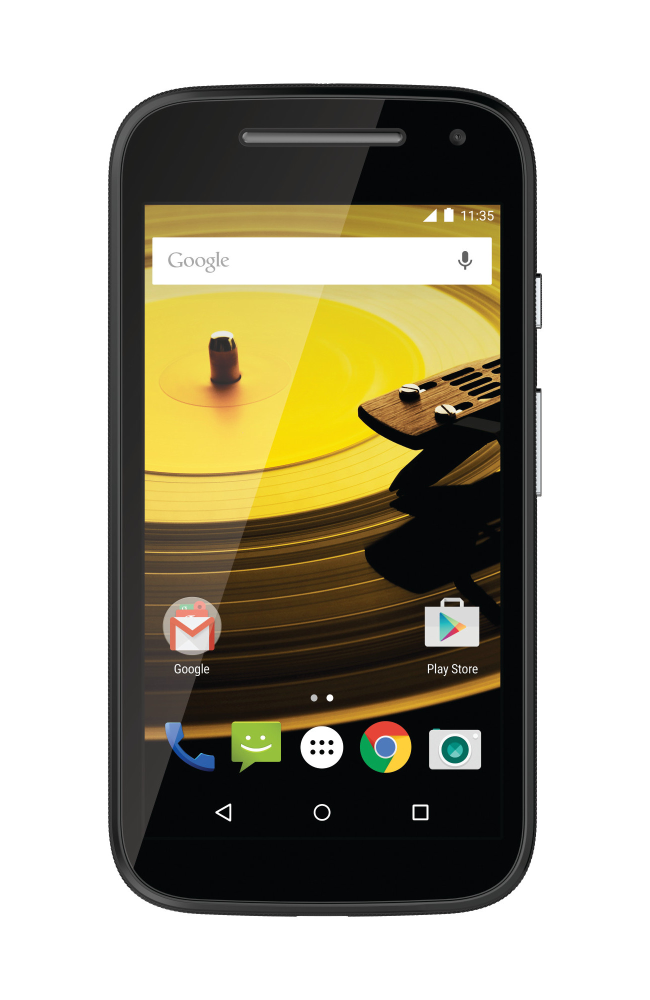

Motorola Moto E 2015 (motorola-surnia)
| This device is still running on armhf, although the processor supports aarch64. If you own it, change it and test it that way. |
|
 Motorola Moto E (2nd Gen) | |
| Manufacturer | Motorola |
|---|---|
| Name | Moto E (2nd Gen) |
| Codename | motorola-surnia |
| Released | 2015 |
| Category | testing |
| Original software | Android 5.0.2 Lollipop |
| postmarketOS kernel | 3.10.49 |
| Hardware | |
| Chipset | Qualcomm MSM8916 Snapdragon 410 |
| CPU | Quad-core 1.2 GHz Cortex-A53 |
| GPU | Adreno 306 |
| Display | 540x960 IPS LCD |
| Storage | 8 GB Flash |
| Memory | 1 GB |
| Architecture | aarch64 |
{kind=link}
| USB Networking |
Works
|
|---|---|
| Flashing |
Works
|
| Touchscreen | |
| Display |
Works
|
| WiFi |
Works
|
| FDE | |
| Mainline |
Works
|
| Battery |
Partial
|
| 3D Acceleration |
Works
|
| Audio | |
| Bluetooth |
Partial
|
| Camera | |
| GPS | |
| Mobile data | |
| SMS |
Partial
|
| Calls | |
| USB OTG |
Partial
|
| NFC | |
| Accelerometer | |
|---|---|
| Magnetometer | |
| Ambient Light | |
| Proximity | |
| Hall Effect | |
| Ir TX | |
|---|---|
| TrustZone | |
|
This device is based on Snapdragon 410. See the SoC page for common tips, guides and troubleshooting steps |
Contributors
Users owning this device
- BogdanTheGeek (Notes: Running android for now)
- Illen (Notes: Dying battery, runs mainline.)
- Pangelo (Notes: cracked screen but works fine)
- Proycon
- Techwizz (Notes: For testing)
- UnDevDeCatOS
- Unrznbl (Notes: need to check latest)
- Wiktorek140
- Xonney1 (Notes: Cracked screen, functional)
Unlocking the bootloader
Please visit the Motorola website for instructions. You will need a valid email address and working fastboot (driver installation needed for Windows and macOS, works out of the box on Linux). The Windows instructions works as written on Linux.
How to enter flash mode
Hold down Power + Volume Down while booting to enter Flash Mode.
Installation
I have tested flashing boot.img with an sdcard rootfs and this seems to work fine.
See also
- As of 2020-03-01, unrznbl is starting to work on mainline with the help of the work on motorola-harpia. Referring to https://wiki.postmarketos.org/wiki/MSM8916_Mainlining
- pmaports!29 Initial merge request, status: merged.
- Device package
- Kernel package
- Firmware package
Modem Setup (same as for motorola-harpia so far)
Content below copied from https://wiki.postmarketos.org/wiki/Moto_G4_Play_(motorola-harpia).
I used these steps to configure and test SMS. It sort of worked I think. Need to do more testing.
Wifi
Configure your kernel and enable the prima wifi staging driver
$ pmbootstrap menuconfig motorola-harpia
$ pmbootstrap build linux-motorola-harpia
On the device
# apk add wcnss-wlan
# /etc/init.d/wcnss-wlan start
Bluetooth (Mainline)
Using unrznbl's tree. bluetoothctl detects controller and pairing works. Still needs some testing to see if it is stable.
Battery (Mainline)
Battery fuel gauge is supported, but fan54046 charging chip isn't. It does still charge but it dosen't indicate that it is charging.
USB OTG (Mainline)
The internal USB hub shows up, but it dosen't detect any USB devices.
Firmware {Wifi/Modem}
The firmware is now properly packaged since pmaports!1947
Modem
Make the necesary links for rmtfs
# cd /boot
# ln -s /dev/disk/by-partlabel/modemst1 modem_fs1
# ln -s /dev/disk/by-partlabel/modemst2 modem_fs2
# ln -s /dev/disk/by-partlabel/fsg modem_fsg
Install necessary software
# apk add msm-modem-downstream rmtfs libsmdpkt_wrapper libqipcrtr4msmipc ofono
Start the wcnss-wlan service to initialize the wifi card (helps the modem?)
# /etc/init.d/wcnss-wlan start
Start a tmux for multiple windows
tmux
Start rmtfs on a terminal
export LD_PRELOAD=/usr/lib/preload/libqipcrtr4msmipc.so
rmtfs -vStart ofonod on another terminal
$ export LD_PRELOAD=/usr/lib/preload/libsmdpkt_wrapper.so
$ ofonod -d -n
Send an SMS!
$ export PHONE_NUMBER="<number to send sms to ex: 1234567890>"
$ sudo dbus-send --print-reply --system --dest=org.ofono /gobi_0 org.ofono.Modem.SetProperty string:"Powered" variant:boolean:"true"
$ sudo dbus-send --print-reply --system --dest=org.ofono /gobi_0 org.ofono.Modem.GetProperties
$ sudo dbus-send --print-reply --system --dest=org.ofono /gobi_0 org.ofono.Modem.SetProperty string:"Online" variant:boolean:"true"
$ sudo dbus-send --system --print-reply --dest=org.ofono /gobi_0 org.ofono.MessageManager.SendMessage string:"$PHONE_NUMBER" string:"Hello world! -postmarketOS"
Receive SMS like this (might be spammy if you have other DBus apps):
$ sudo dbus-monitor